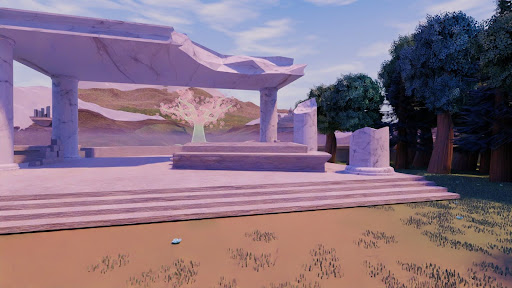
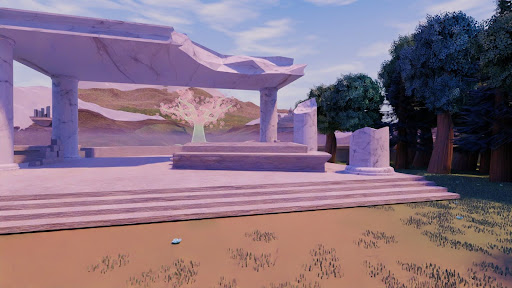

About the Artist
My name is Margaret Summers and I am an upcoming game developer.
I specialize in game development and throughout my studies I have learned to program in multiple languages for a range of different digital mediums and platforms. My passion is developing games and other digital media that immerse audiences in a new world of my own creation. Through the medium of games, I hope to make topics considered to be difficult more accessible in an entertaining and challenging way.
By using more experimental game mechanics and explorative design, I strive to build a narrative that can convey a wide range of themes and topics. My projects aim to allow the audience to explore and learn about themes or topics through the rules of these new worlds. I believe in learning through ones own experiences and learning the boundaries and results of your actions through mistakes. I use my work to push people outside of their comfort zone to broaden their horizons through creative experiences.
Portfolio
A collection of completed projects and prototypes.
Scroll down to see more
Winter Break
No Clue

Winter Break
.jpg)
Created in Unity/C# in Collaboration with Percy Ngyuen & Angel Cella Cenerini
Winter Break is a deceivingly cute survival game where you play as a child trying to keep their snowman alive during winter. You'll have to shovel away the snow and sing to your snowman friend to keep them happy and healthy while the snowstorms come and go. Survive until Christmas to see how the story ends.
On the outside, the game is cute and fun but when you take a deeper look the true story comes through. This short survival game was made with the idea of divorce and childhood trauma in mind. Its meant to showcase a young child trying to cope with fighting parents by protecting his snowman friend from danger. Throughout the game is you go too close to the house you hear noises of the parents fighting. The final clue is that there is no good ending in the game. Even if you win, the final scene shows that the parents divorced with a fallen picture and an empty yard.
.jpg)
.jpg)
.jpg)
.jpg)
.png)
.png)
.jpg)
.jpg)
.jpg)
.jpg)


 
